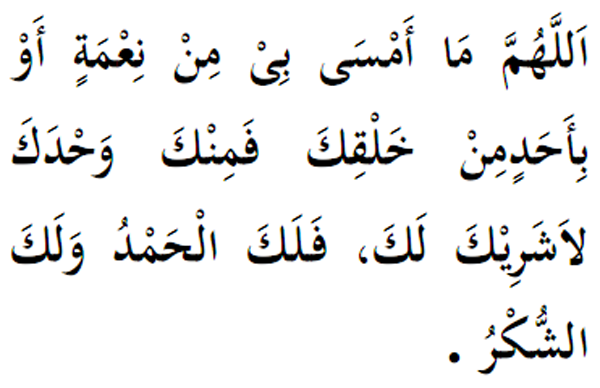

|

Terjemahan "Ya Allah, apa saja nikmat yang kami dapati petang ini dari mana-mana makhluk-Mu maka sebenarnya dari Engkau jua. Tidak ada sekutu bagi-Mu. Puji dan kesyukuran (kami) untuk-Mu." Fadhilat Wirid Berkata Abdullah bin Ghanam al-Biyadzi (RA), sabda Rasulullah (SAW): "Sesiapa yang membaca waktu pagi dan petang sebanyak 3 kali, menunjukkan ia telah naikan kesyukuran kepada Allah hari dan malam tersebut." |